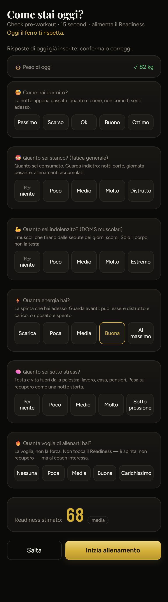
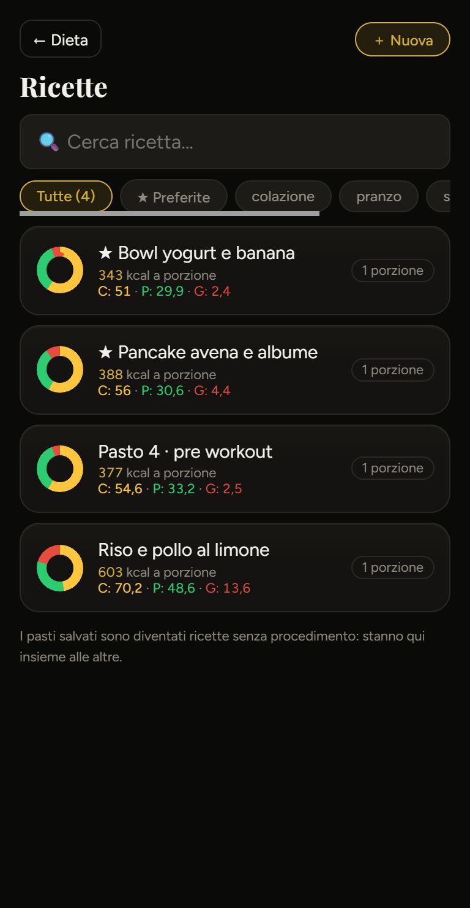

A sinistra com'è oggi (dati finti), a destra la proposta.
1 · Check di prontezza (prima della seduta)
Oggi: sei card alte con spiegazione lunga e cinque bottoni ciascuna, quasi due schermate prima di poter partire. Proposta: tutto in una schermata, una riga per domanda, il voto che si aggiorna in cima; il sonno lo propone il WHOOP (azzurro) e lo cambi solo se non torna.
Oggi

Proposta
17:54●●● 77%
‹ IndietroCome stai oggi?
68
Prontezza 68 · media
WHOOP recupero 64% · peso ✓ 90,5 kg
Sonno Buono · da WHOOP 7h20
12345
Stanchezza generale Poca
nopocamediamoltamax
Muscoli indolenziti Poco
nopocomediomoltomax
Energia Buona
12345
Stress Medio
nopocomediomoltomax
Voglia di allenarti non conta nel voto Buona
12345
Tieni premuta una domanda per la spiegazione
Salta
▶ Inizia D5
Tutto in una schermata: si risponde in 10 secondi senza scorrere.
Le spiegazioni lunghe non spariscono: si aprono tenendo premuta la domanda.
Se hai già risposto oggi, le risposte sono già segnate e basta «Inizia».
2 · Ricette
Oggi: funziona, ma ha «← Dieta» a bottone, card alte con i decimali (29,9 · 4,4) e «1 porzione» ripetuto. Proposta: barra come le altre pagine, righe compatte con C · P · G interi, tempo e un «＋» per mettere la ricetta nel diario senza aprirla.
Oggi

Proposta
12:31●●● 70%
‹ CiboRicette＋
⌕ Cerca ricetta…
Tutte 4★ PreferiteColazionePranzoSpuntino
Ricette
★ Bowl yogurt e banana343 kcal · C 51 · P 30 · G 2 · 5′
＋
★ Pancake avena e albume388 kcal · C 56 · P 31 · G 4 · 15′
＋
Riso e pollo al limone603 kcal · C 70 · P 49 · G 14 · 25′
＋
Pasti salvati
Pasto 4 · pre workout377 kcal · C 55 · P 33 · G 3
＋
Le ricette con procedimento e i pasti salvati in due gruppi, invece della nota in fondo.
Il «＋» apre la scelta del pasto e della quantità, come oggi dal diario.
Le porzioni si vedono dentro la ricetta, non su ogni riga.